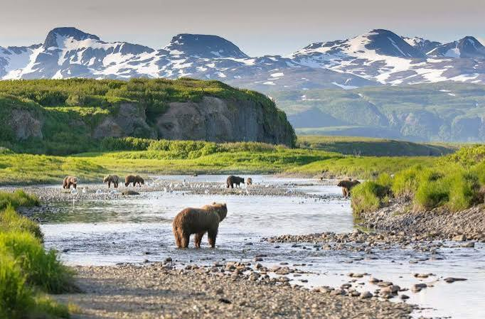

Geographisch ist Alaska zudem der nördlichste, westlichste und wenn man Ost und West als fest definierte Erdhälften betrachtet auch der östlichste Bundesstaat,
da die Aleuten-Inseln den Antimeridian (180°) überschreiten. Der Bundesstaat macht mit 1.717.854 km², von denen 1.481.346 km² auf Land entfallen, knapp 17,5 %
der Gesamtfläche der USA aus. Alaska hat die drittniedrigste Bevölkerungszahl aller Bundesstaaten (nur 0,22 % der Gesamtbevölkerung der USA) und die niedrigste
Bevölkerungsdichte (0,41 Einwohner je km²). Die USA erwarben das Gebiet 1867 vom Russischen Kaiserreich; am 3. Januar 1959 wurde es der 49. Bundesstaat der USA.
Alaska hat aufgrund seiner kaum beeinflussten Wildnisregionen den Beinamen Last Frontier („Letzte Grenze“ im Sinne von „letztes Grenzgebiet der Zivilisation“).
Eine finanzpolitische Besonderheit stellt der Alaska Permanent Fund dar.
Quellen- und Lizenzhinweis:
Dieser Text basiert auf dem Wikipedia-Artikel
Alaska
(geänderte Fassung) und steht unter der Lizenz
Creative Commons Attribution-ShareAlike 4.0 International (CC BY-SA 4.0).
Das Bild ist von
urlaubsguru.de